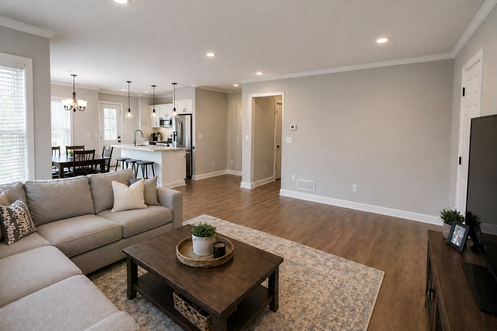

Blog / House Painter Guide

If you are searching for a house painter in Tampa, you are probably not only looking for someone who can apply paint. You are looking for a company that will protect your home, communicate clearly, handle prep work honestly, and leave the project looking clean when it is finished.
That is especially true in Florida, where interior wear, humidity, exterior exposure, and previous patchwork can make painting look simpler than it really is from a distance.
Why choosing the right painter matters
Painting is one of the fastest ways to improve a home visually, but it is also one of the easiest places for scope to get vague. Two quotes can sound similar while including very different levels of preparation, wall repair, trim work, cleanup, and paint quality.
A good painter helps you understand the work before the project starts. A weak painter often relies on a low number and hopes the details stay blurry.
House painter vs. lowest-price quote
The cheapest painting quote is not always the most affordable once the real work begins. A lower price may leave out drywall repair, protection for floors and furniture, prep around trim, extra coats, texture corrections, or realistic cleanup expectations.
That does not mean the highest quote is automatically best either. It means homeowners should compare what is included and how clearly it is explained.
What should be included in a painting estimate?
- Which rooms or exterior areas are included
- Whether ceilings, trim, doors, and closets are included
- Surface prep and patching assumptions
- Whether drywall repair is part of the scope
- Paint quality assumptions and finish expectations
- Protection for floors, furniture, landscaping, or nearby surfaces
- Cleanup expectations and what happens with scope changes
If you want a stronger baseline before comparing quotes, our article on requesting a remodeling estimate in Florida helps homeowners send the right details up front.
Surface preparation
Preparation is usually the biggest difference between a rushed paint job and a clean result. Prep may include cleaning, patching, sanding, masking, caulking, priming, and protecting the surrounding area. The smoother and more durable finish homeowners expect is usually earned in this phase, not in the last hour of painting.
Drywall repairs before painting
Paint does not fix bad drywall. Cracks, dents, texture issues, soft spots, and old patchwork should be handled before painting, especially if you want the finish to look professional in daylight. That is why many painting projects also connect to drywall repair in Tampa Bay.
Interior painting considerations
Interior painting usually involves protecting floors, furniture, wall hangings, and trim. Homeowners should ask whether the quote assumes empty rooms or lived-in rooms, whether doors and baseboards are included, and how wall repairs will be handled if damage becomes more obvious once preparation starts.
Need help figuring out what your painting project actually needs?
Text WBNextlevel photos of the rooms or exterior areas you want painted.
Text 813-591-7560 Request EstimateExterior painting considerations
Exterior work adds weather exposure, access, washing, surface condition, and protection concerns. A home in Tampa Bay can face strong sun, humidity, rain, mildew, salt air in some areas, and previous paint failure. Exterior painting should never be judged only by color selection.
Florida sun, rain, and humidity
Florida conditions are hard on surfaces. Paint quality and prep matter because the climate can expose weak spots faster. Homes in Tampa, Riverview, and Brandon may all share similar climate challenges, even if the houses themselves are very different.
Paint quality
Paint quality affects coverage, durability, washability, and how the finish holds up over time. The right product depends on the room, the surface, moisture exposure, and how the home is used. A serious painting company should be able to discuss that without turning the conversation into sales fluff.
Protecting floors, furniture, and property
Professional house painting should include protection, not just application. That means discussing floors, furniture, nearby finishes, and whether the home will remain occupied during the work.
Communication
Good communication is one of the strongest trust signals in any home project. Homeowners should know what is happening, what is included, and what could change if prep reveals more damage. That is true whether you are hiring interior painters in Tampa or comparing exterior painters in the surrounding Tampa Bay area.
Project scope
Scope clarity matters more than most homeowners expect. If a quote says "paint living room" but does not explain patching, trim, ceilings, texture corrections, or furniture handling, the estimate may not be as complete as it sounds.
Cleanup
Cleanup should not feel like an afterthought. A professional painting company should be clear about masking removal, touchup review, dust, materials, and what the room or exterior area will look like when the project is done.
Warranty conversations
Homeowners do not need flashy promises. They need honest conversations about what the workmanship covers, what moisture or surface conditions may affect, and what is reasonable to expect from the finish. Clarity matters more than big words here.
Warning signs when comparing painting quotes
- The estimate is vague about prep or drywall work
- No one asks about the condition of the walls or exterior surfaces
- The scope ignores trim, ceilings, doors, or problem areas you already mentioned
- The communication feels rushed before the project even starts
- The price is very low but the finish expectations sound unusually high
Questions to ask a house painter
- What prep work is included?
- How are drywall issues handled before painting?
- Are trim, ceilings, doors, and protection included?
- What paint quality assumptions are in this quote?
- How will communication work during the project?
- What should I expect the room or exterior area to look like when you leave?
Why preparation often matters more than homeowners expect
Paint is the visible finish, but preparation determines whether the finish looks smooth, flat, durable, and intentional. That is one reason our Florida painting cost guide talks so much about prep instead of only color or square footage.
How WBNextlevel approaches painting projects
WBNextlevel approaches painting with the same priorities that matter across remodeling: clear communication, realistic scope, clean work areas, and honest discussions about prep. That includes identifying when a project is mainly paint and when it also needs wall repair or other supporting work first.
If you are comparing painters in Tampa FL, or looking at house painters in Riverview FL or Brandon FL, that kind of clarity usually matters more than homeowners realize at first.
Areas served
WBNextlevel serves homeowners across Tampa Bay, including Tampa, Riverview, and Brandon, along with nearby Florida communities.
House painter FAQs
What should be included in a painting estimate?
A clear painting estimate should describe scope, prep work, drywall repair if needed, surfaces included, exclusions, cleanup expectations, and how changes are handled.
Why does surface preparation matter so much?
Preparation affects how smooth, durable, and clean the final paint looks. Paint cannot permanently hide wall damage, poor texture, moisture issues, or rushed repairs.
Should drywall be repaired before painting?
Yes. Drywall damage, texture issues, cracks, and soft spots should be addressed before painting so the finish looks cleaner and lasts better.
Is the cheapest painter usually the best value?
Not necessarily. A lower quote may leave out prep, drywall work, trim, cleanup, paint quality, or scope details that matter later.
Can I text photos before requesting a painting estimate?
Yes. Photos of the rooms or exterior areas, your city, and any visible damage make early planning much more accurate.
Does WBNextlevel serve Tampa, Riverview, and Brandon?
Yes. WBNextlevel serves homeowners in Tampa, Riverview, Brandon, and surrounding Tampa Bay communities.
Looking for a house painter in Tampa or the surrounding Tampa Bay area?
Text WBNextlevel at 813-591-7560 or request an estimate online.
Request a Free Estimate Text Us